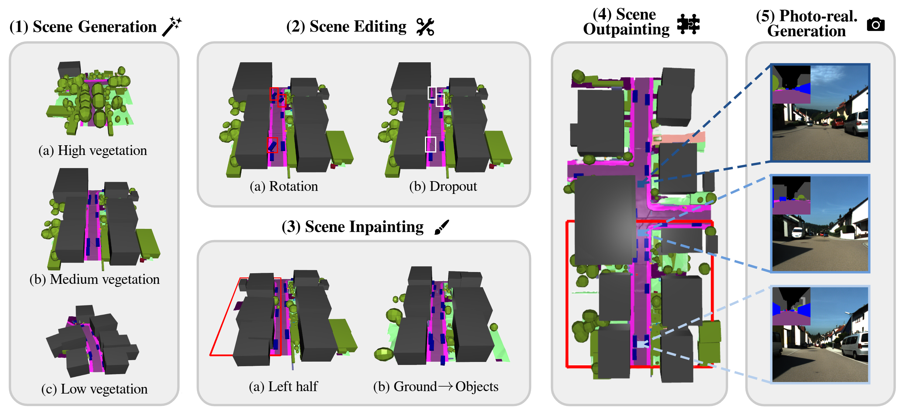
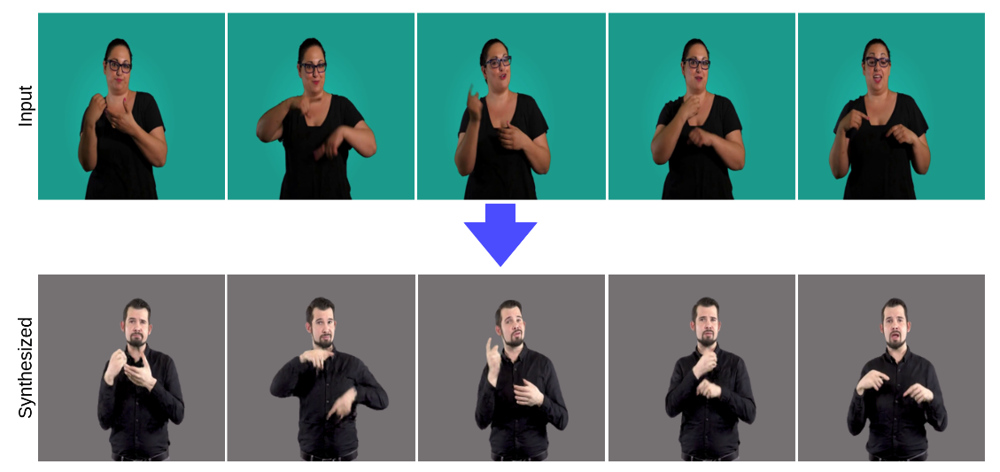
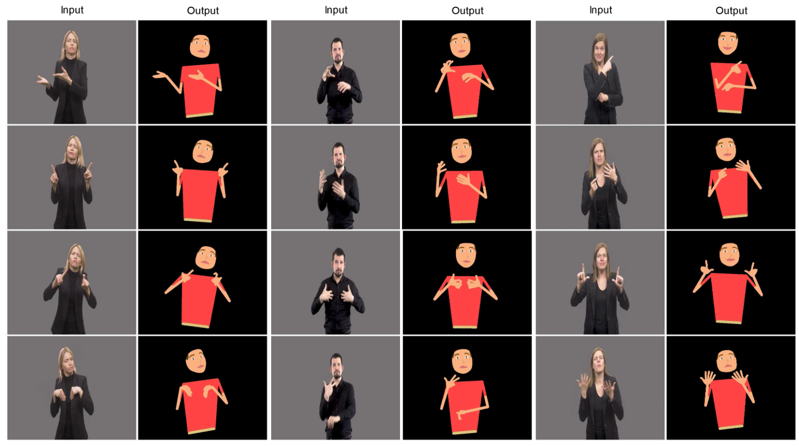

Research
My research interests lie at the intersection of Computer Vision, Computer Graphics and Machine Learning. I am particularly interested in generative models for 3D scenes and compact, structured representations of complex real-world environments. During my PhD, I aim to leverage such 3D representations as controllable intermediates for photo-realistic video synthesis, enabling fine-grained manipulation, scene editing, and ultimately the creation of safety-critical or adversarial scenarios for robust autonomous systems.
|
|

|
PrITTI: Primitive-based Generation of Controllable and Editable 3D Semantic Urban Scenes
Christina Ourania Tze, Daniel Dauner, Yiyi Liao, Dzmitry Tsishkou, Andreas Geiger
IEEE/CVF Conference on Computer Vision and Pattern Recognition (CVPR), 2026
project page
Existing approaches to 3D semantic urban scene generation predominantly rely on voxel-based representations, which are bound by fixed resolution, challenging to edit, and memory-intensive in their dense form. In contrast, we advocate for a primitive-based paradigm where urban scenes are represented using compact, semantically meaningful 3D elements that are easy to manipulate and compose. To this end, we introduce PrITTI, a latent diffusion model that leverages vectorized object primitives and rasterized ground surfaces for generating diverse, controllable, and editable 3D semantic urban scenes. This hybrid representation yields a structured latent space that facilitates object- and ground-level manipulation. Experiments on KITTI-360 show that primitive-based representations unlock the full capabilities of diffusion transformers, achieving state-of-the-art 3D scene generation quality with lower memory requirements, faster inference, and greater editability than voxel-based methods. Beyond generation, PrITTI supports a range of downstream applications, including scene editing, inpainting, outpainting, and photo-realistic street-view synthesis.
|
|

|
Neural Sign Reenactor: Deep Photorealistic Sign Language Retargeting
Christina Ourania Tze, Panagiotis P. Filntisis, Athanasia-Lida Dimou, Anastasios Roussos, Petros Maragos
IEEE/CVF Conference on Computer Vision and Pattern Recognition Workshops (CVPRW), 2023
video
In this paper, we introduce a neural rendering pipeline for transferring the facial expressions, head pose, and body movements of one person in a source video to another in a target video. We apply our method to the challenging case of Sign Language videos: given a source video of a sign language user, we can faithfully transfer the performed manual (e.g., handshape, palm orientation, movement, location) and non-manual (e.g., eye gaze, facial expressions, mouth patterns, head, and body movements) signs to a target video in a photo-realistic manner. Our method can be used for Sign Language Anonymization, Sign Language Production (synthesis module), as well as for reenacting other types of full body activities (dancing, acting performance, exercising, etc.). We conduct detailed qualitative and quantitative evaluations and comparisons, which demonstrate the particularly promising and realistic results that we obtain and the advantages of our method over existing approaches.
|
|

|
Cartoonized Anonymization of Sign Language Videos
Christina Ourania Tze, Panagiotis P. Filntisis, Anastasios Roussos, Petros Maragos,
IEEE Image, Video, and Multidimensional Signal Processing Workshop (IVMSP), 2022
video
In this paper, we propose a novel method for the anonymization of sign language footage: given a source RGB video of a sign language user, we conceal the identity of the original signer by reproducing the video using animated cartoon characters. Our method pays particular attention to the cues that are important for sign language communication, transferring the motion and articulation of the hands, upper body and head of the real signer to the cartoon character in a faithful manner. To effectively capture these cues, we build upon an effective combination of the most robust and reliable deep learning methods for body, hand and face tracking that have been introduced lately. Our system first extracts the skeleton pose sequence from the input video as well as the cartoon’s skeleton from its reference figure. The extracted skeletons are then fed into our skeleton retargeting algorithm, which combines the bone lengths from the cartoon character with the pose information from the human signer. The recombined parameters are then used as input to a recursive kinematic tree-based algorithm, which retargets the input skeleton pose sequence to the cartoon’s skeleton. Finally, the reproduced frames of the signing cartoon are generated from the retargeted skeleton pose sequence. To the best of our knowledge, our method is the first to implement video reproduction using cartoon characters as a solution to the challenging task of sign language video anonymization. We conduct qualitative evaluations to demonstrate the effectiveness of our approach and the promising results that we obtain.
|
|
{kind=link}